TGS Visuals / Productions
Laval · Québec
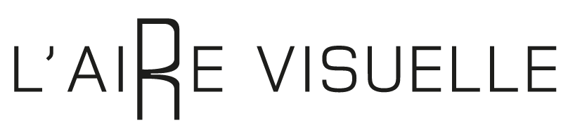
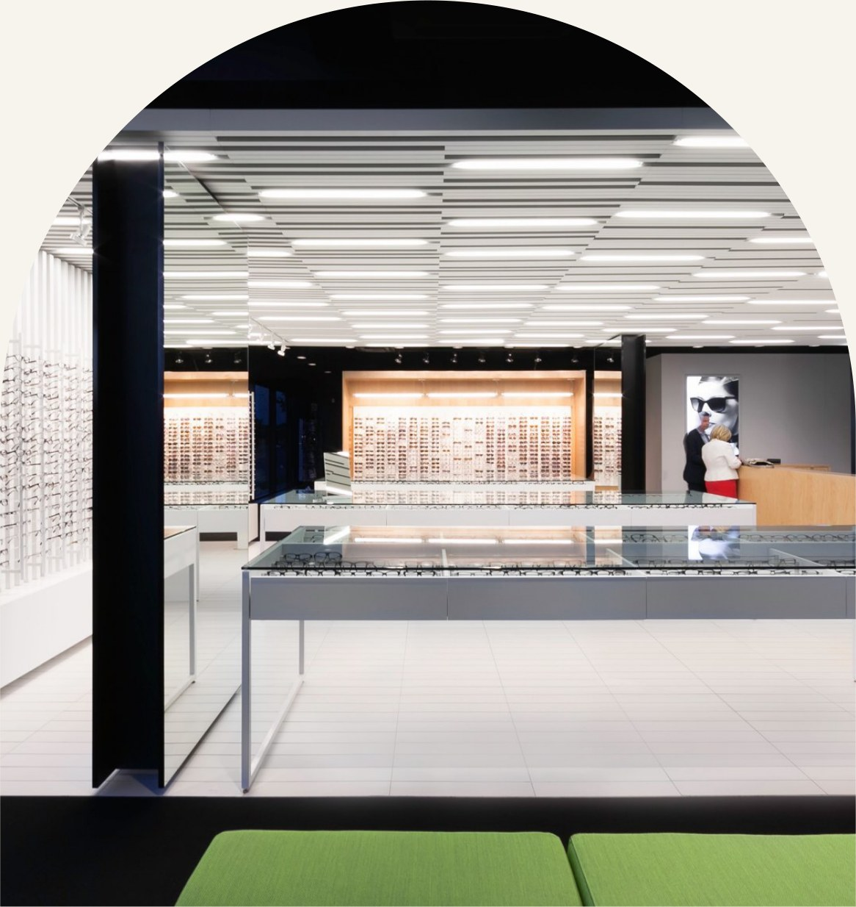
Une proposition préparée pour
L'Aire Visuelle
Optométristes & opticiens — Vimont · Laval · Rive-Nord
Stratégie de croissance de la patientèle
Vos yeux sont uniques. Votre style aussi.
Six optométristes, quatre opticiens et un mur de montures griffées sous un même toit. Un plan pour faire visiter la clinique à Laval avant son prochain examen de la vue — et en tirer de nouveaux patients chaque semaine.
Septembre 2026
Mandat oct. – déc.
TGS · 111 Chabanel Ouest, Montréal
L’occasion
L’Aire Visuelle × TGS
Le secret le mieux
gardé de Vimont.
Une clinique d’optométrie indépendante sur le boulevard Dagenais — plus de 40 ans à Laval, six optométristes, quatre opticiens et un espace lumineux et aéré signé SHED architecture.
Les gens choisissent où faire examiner leurs yeux dans leur fil d’actualité, bien avant de prendre le téléphone. Le plan : transformer la clinique, l’équipe, la technologie et les montures que vous offrez déjà en publicités qui génèrent de nouvelles demandes d’examen — sur Instagram et Facebook.
Rien ne doit changer dans les soins. Ce qui doit changer, c’est le nombre de Lavallois qui ont vu la clinique avant leur prochain examen.
Personne ne réserve un examen dans une clinique jamais vue.
Notre travail : leur montrer la vôtre
Secteurs desservis
Vimont · Auteuil · Duvernay · tout Laval · Rive-Nord
Sur Instagram
446 abonnés, 197 publications — une salle de montre aussi belle mérite un public
Heures
Ouvert jusqu’à 20 h du mardi au jeudi — après le travail
Services
Examens de la vue, examens pour enfants, lunetterie, lentilles cornéennes, MacuMira
Préparé pour L’Aire Visuelle — Stratégie de croissance de la patientèle
02
01 — L’objectif
L’Aire Visuelle × TGS
L’objectif SMART
Un seul objectif derrière chaque vidéo, chaque campagne et chaque rapport.
L’objectif, en une ligne
Remplir l’horaire d’examens de nouveaux patients de Vimont et de partout à Laval, transformer chaque examen en essayage au mur de montures, et relier chaque rendez-vous à la campagne qui l’a amené.
Le plan en un coup d’œil
S
Spécifique — de nouveaux patients, près de la clinique
Des adultes, des familles et des aînés de Vimont, d’Auteuil, de Duvernay et du reste de Laval qui sont dus pour un examen — ou qui portent les mêmes montures depuis des années.
M
Mesurable — demandes, examens, lunetterie
Quatre chiffres clés : les demandes de nouveaux patients issues des campagnes, les examens réservés, le coût par nouveau patient et la lunetterie commandée par ces patients.
A
Atteignable — bâti sur ce qui existe
Une salle de montre signée SHED architecture, six optométristes, des centaines de montures griffées, des heures en soirée et la prise de rendez-vous en ligne déjà en place.
R
Réaliste — un patient vaut des années
Un nouveau patient revient à chaque examen, souvent avec toute la famille — et chaque visite peut se terminer au mur de montures, avec des verres, des montures ou des lentilles.
T
Temporel — d’octobre à décembre
Trois mois, révisés chaque mois — des avantages 2026 utilisés avant leur renouvellement, et janvier réservé avant les Fêtes.
Ce à quoi nous nous engageons. Le contenu, les campagnes, le suivi et les rapports, c’est nous. Ce qui se passe dans la salle d’examen et au mur de montures — l’examen, la prescription, le choix des montures — est mesuré, pas promis.
Filmer la clinique→Lancer 4 campagnes→Demande de rendez-vous→Examen de la vue→Lunetterie commandée
Préparé pour L’Aire Visuelle — Stratégie de croissance de la patientèle
03
02 — Le parcours du patient
L’Aire Visuelle × TGS
Du fil au mur de montures
Un examen de la vue n’est pas un achat impulsif — ce sont des mois de « mes lunettes sont encore correctes » avant un seul rendez-vous. Le plan couvre tout le cycle, pas un seul clic.
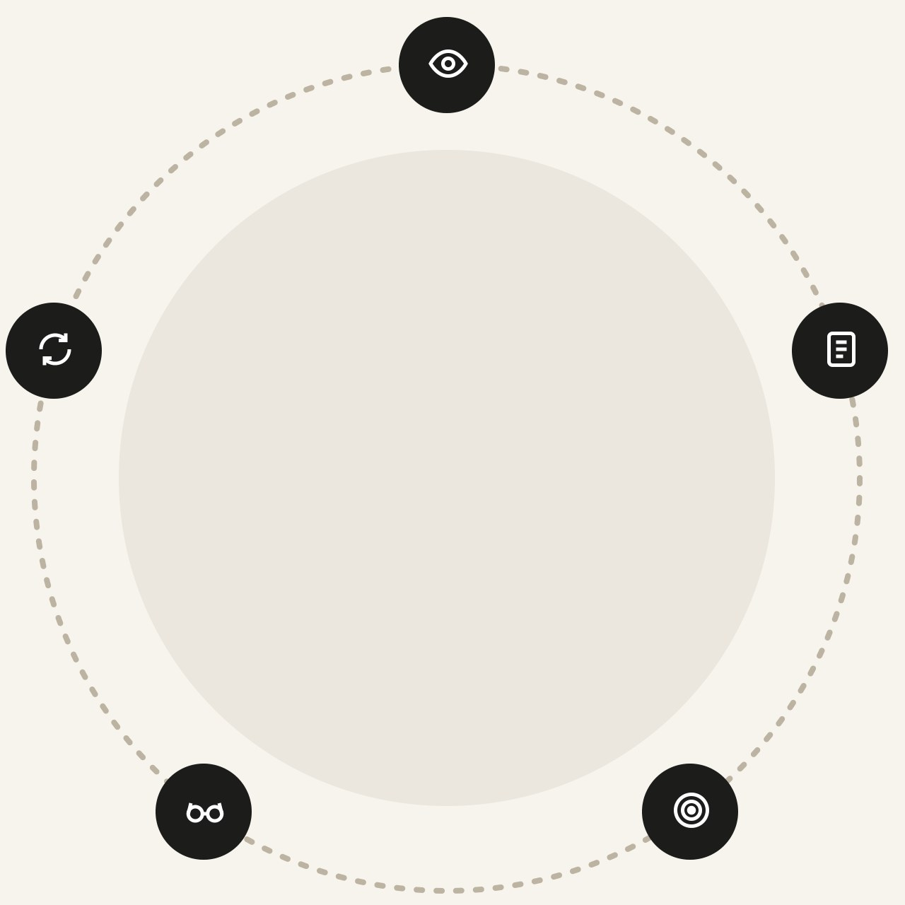
Chaque examen
Amène le suivant
On le voit
Quelqu’un fait défiler une visite de la salle de montre, un examen de la rétine à l’écran, ou l’opticien qui l’aiderait à choisir.
On demande
On touche « Réserver » et on arrive sur votre page de rendez-vous — optométriste ou opticien, nom, téléphone, pour qui est l’examen — envoyé en moins d’une minute.
Retour et recommandation
L’an prochain, ils reviennent — avec les enfants. Le voisin demande d’où viennent les nouvelles lunettes.
L’examen et l’essayage
Votre réception confirme. L’optométriste fait l’examen; les opticiens aident à choisir les montures.
C’est mesuré
Chaque demande sur votre site est reliée à la campagne, au placement et à la pub qui l’ont lancée.
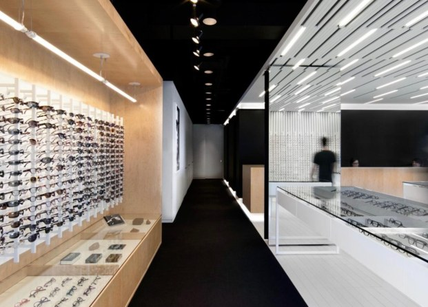
Votre salle de montre est l’avantage. La plupart des pubs d’optométrie, c’est une paire de lunettes tirée d’une banque d’images et un numéro de téléphone. Une clinique lumineuse signée SHED architecture, un mur de montures choisies une à une et des opticiens que les patients nomment — c’est une preuve qu’aucune photo de banque ne peut copier. On s’assure simplement que Laval la voie.
Préparé pour L’Aire Visuelle — Stratégie de croissance de la patientèle
04
03 — De la pub au rendez-vous
L’Aire Visuelle × TGS
De la pub au rendez-vous
Ce qu’une personne de Laval voit, touche et remplit — en moins d’une minute — sur Instagram ou Facebook.
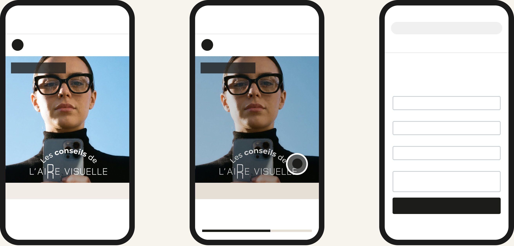
9:41
●●● ▮
Instagram
Accueil
AV
laire_visuelle
Commandité
LE MUR DE MONTURES
Réserver
›
laire_visuelle Dû pour un examen de la vue? Rencontrez l’équipe, puis trouvez vos montures. Ouvert jusqu’à 20 h, du mardi au jeudi.
9:41
●●● ▮
Instagram
Accueil
AV
laire_visuelle
Commandité
LE MUR DE MONTURES
Réserver
›
Ouverture de lairevisuelle.com…
9:41
●●● ▮
🔒 lairevisuelle.com/rendez-vous
L’Aire Visuelle
MENU
Réservez votre examen
Dites-nous pour qui c’est — on confirme l’heure et la couverture avant votre visite.
Nom
Julie Tremblay
Téléphone
(450) 555-0142
Courriel
julie.t@email.com
Pour qui est l’examen?
Moi + mon fils (8 ans). Le mardi soir, c’est idéal.
Demander mon rendez-vous
→
→
1Voir la pub
Une visite de 30 secondes du mur de montures apparaît entre les publications des amis et de la famille.
2Toucher « Réserver »
Un seul toucher ouvre votre site Web — pas de messages privés, pas d’appels manqués pendant les heures de travail.
3Envoyer la demande
Une nouvelle page de rendez-vous sur votre site, suivie par le pixel Meta et reliée à votre agenda en ligne. Elle arrive directement à votre réception.
Même pub, trois placements — une seule page de rendez-vous
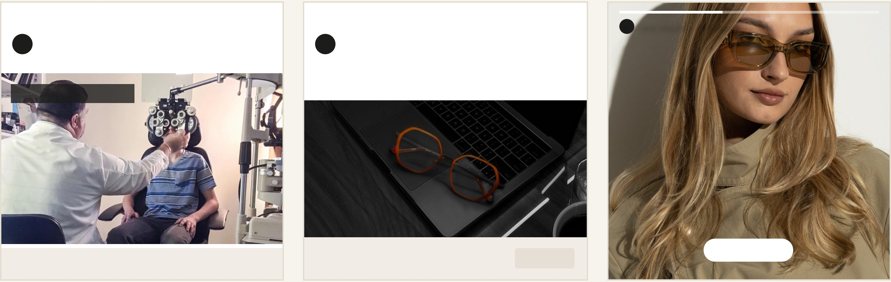
Fil Instagram
AV
laire_visuelle
Commandité
VOTRE EXAMEN, EXPLIQUÉ
Réserver
›
Fil Facebook
AV
L’Aire Visuelle
Commandité
Des centaines de montures, à un examen près. Nouveaux patients bienvenus à Vimont.
LAIREVISUELLE.COM
Ouvert jusqu’à 20 h — Laval
Réserver
AV
laire_visuelle · Commandité
Des montures qui vous ressemblent — à Vimont.
Réserver un essayage ›
Pub vue→Toucher « Réserver »→Page de rendez-vous→Demande envoyée→Attribuée à la pub
Préparé pour L’Aire Visuelle — Stratégie de croissance de la patientèle
05
The Golden Standard · dans le quartier
L’Aire Visuelle × TGS
PREMIUM · EXCLUSIF À THE GOLDEN STANDARD · 4 000 $ / MOIS
100 cartes. Une dernière ligne.
Cent cartes d’examen de la vue format poche — « Lisez la dernière ligne » — cachées dans Vimont : dans les cafés, les parcs et sur les babillards communautaires. Regardez bien la dernière ligne : elle vaut 100 $ sur de nouvelles montures à la clinique. Qui en trouve une la publie, identifie la clinique et l’apporte à son essayage.
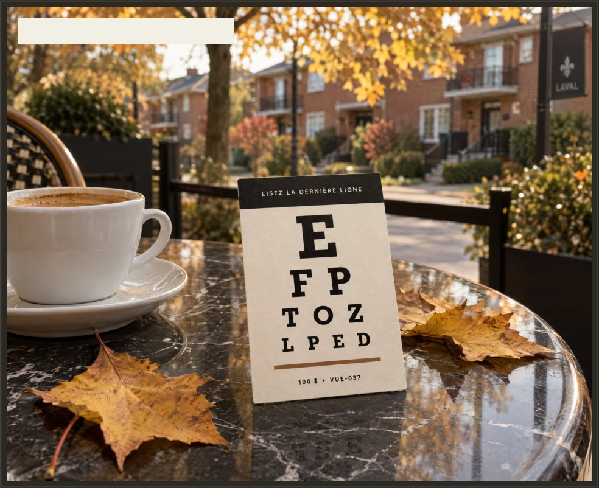
CARTE 037 · TROUVÉE À VIMONT
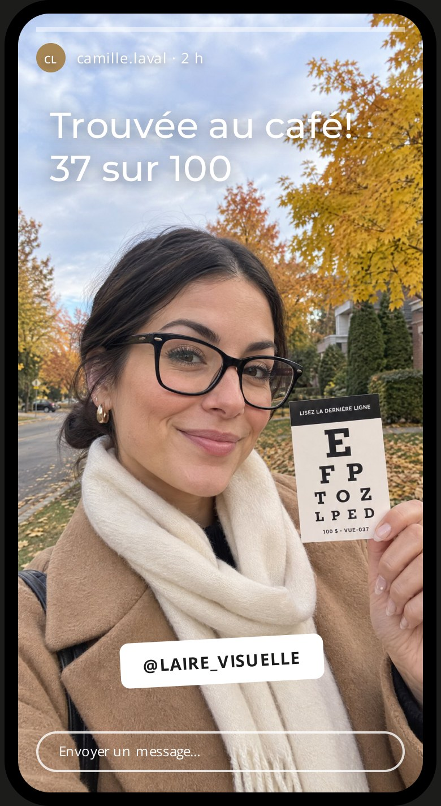
01
Cachées dans Vimont
TGS place 100 cartes numérotées dans le quartier — avec la permission des commerces locaux — et filme chaque dépôt pour le teaser.
02
Trouvée, publiée, identifiée
Pour la réclamer, la personne publie une story qui identifie @laire_visuelle. Chaque story met la clinique devant ses propres abonnés — une portée gratuite et mesurable.
03
Jusqu’au mur de montures
Chaque dernière ligne cache son propre code, de VUE-001 à VUE-100 — vous voyez exactement combien de trouvailles sont devenues des patients.
La campagne derrière. L’une des quatre campagnes The Golden Standard anime la chasse : teasers, mises à jour hebdomadaires « trouvées jusqu’ici » et repartages de chaque trouvaille — la carte et l’endroit, jamais un avis sur les soins. Les 100 crédits sont offerts par la clinique et s’appliquent à la lunetterie, jamais à l’examen; les règles (une par personne, exactement 100 cartes, valides du 1er octobre au 31 décembre 2026) sont imprimées sur chaque carte.
Préparé pour L’Aire Visuelle — Stratégie de croissance de la patientèle
06
04 — Le public cible
L’Aire Visuelle × TGS
À qui l’on s’adresse
Trois profils de patients — chacun joint différemment.
Le mordu de montures
Porte des lunettes tous les jours et les traite comme la montre à son poignet. Veut des montures griffées — et quelqu’un à l’œil exercé pour l’aider à choisir la forme.
Où le joindre : Reels et Stories Instagram, arrivages, essayages, la chasse aux 100 cartes
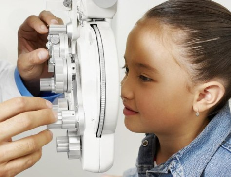
Le parent organisé
Prend les rendez-vous de toute la maisonnée. Les examens des enfants sont couverts une fois par année par la RAMQ, et « Mieux voir pour réussir » rembourse 300 $ sur les lunettes d’un enfant.
Où le joindre : fil Facebook, couverture expliquée, reciblage de quiconque a visité le site
Le 65 ans et plus
Examen couvert une fois par année par la RAMQ. Tient à lire, à conduire le soir et à garder une vision centrale nette — et veut qu’on lui explique simplement.
Où le joindre : rayon Facebook autour de la clinique, contenu santé oculaire, MacuMira expliqué par l’optométriste
Ce qui compte pour eux
Une clinique lumineuse, calme et moderne
Savoir ce qui est couvert avant de s’asseoir
Ouvert jusqu’à 20 h, du mardi au jeudi
Des montures qui leur ressemblent, pas un catalogue
Où on les joint
Fil Instagram, Reels et Stories
Fil Facebook, rayon autour de la clinique
Un toucher de la pub à votre page de rendez-vous
Reciblage et audiences similaires du site
Pourquoi la vidéo fonctionne — où style et vision se rencontrent
Un catalogue de montures demande d’imaginer une monture sur son visage. Un essayage de trente secondes la montre — la lumière de la salle de montre, l’opticien qui choisit la forme, la rétine à l’écran. Le premier obtient « mes lunettes sont correctes ». Le second obtient un rendez-vous ce soir.
Préparé pour L’Aire Visuelle — Stratégie de croissance de la patientèle
07
05 — Le contenu
L’Aire Visuelle × TGS
Ce qu’on va créer
20 contenus par mois — 12 vidéos, 8 publications — filmés dans votre clinique, sous-titrés en français et en anglais. Confort, précision et style. Sans compromis.
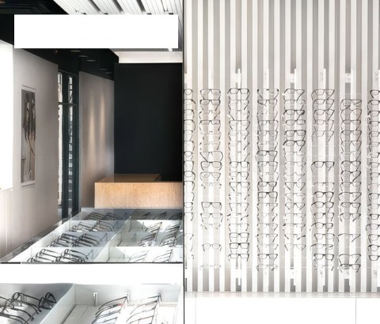
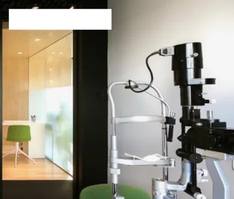
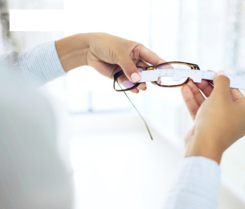
LE MUR DE MONTURES
AU CŒUR DE L’EXAMEN
RENCONTREZ LES OPTICIENS
Filmé dans votre clinique — chaque patient à l’écran avec un consentement écrit et révocable.
Le mur de montures
4 / MOISVos collections — arrivages, essayages et les détails qui font qu’une monture se porte avec plaisir tous les jours.
La visite de la salle de montreNouveau cette semaineTrois visages, une monture
Rencontrez l’équipe
4 / MOISSix optométristes et quatre opticiens — qui ils sont et ce qu’ils font pour faciliter la visite, de l’examen à l’essayage.
Dr Sylvain Duquette, optométristeLaurent : choisir une montureDe l’examen à l’essayage, sous un même toit
Au cœur de l’examen
4 / MOISLa technologie derrière un examen complet — la rétine à l’écran, le bilan de santé oculaire et des résultats expliqués avant votre départ.
Votre rétine, à l’écranLe premier examen d’un enfantMacuMira, expliqué
Couverture et coûts
4 / MOISLa RAMQ, « Mieux voir pour réussir », les assurances privées et comment réclamer — expliqués avant même de s’asseoir, chacun relié à la page de rendez-vous.
Utilisez vos avantages 2026300 $ remboursés sur les lunettes d’enfantCe que couvre la RAMQ
Demandez à l’optométriste
4 / MOISDes réponses courtes et honnêtes aux questions qu’on tape dans Google à minuit.
Yeux secs et écransLes progressifs, expliquésLentilles cornéennes : suis-je candidat?
Préparé pour L’Aire Visuelle — Stratégie de croissance de la patientèle
08
06 — Le calendrier de contenu · Mois 1
L’Aire Visuelle × TGS
Octobre 2026
20 contenus par mois — 12 vidéos, 8 publications — du lundi au vendredi. La barre au-dessus de chaque semaine indique la campagne que ce contenu alimente.
Le mur de montures
Rencontrez l’équipe
Au cœur de l’examen
Couverture et coûts
Demandez à l’optométriste
Chasse aux cartes · Golden Standard
Lundi
Mardi
Mercredi
Jeudi
Vendredi
Semaine 1A · La chasse aux 100 cartes — Lancement · 100 cartes cachées dans VimontTout le quartier
1 oct.VIDÉO
La visite de la salle de montre
De la porte au mur de montures en 40 secondes
2 oct.VIDÉO
La chasse est lancée
100 cartes, 100 $ chacune, cachées tout près
Semaine 2B · Votre prochain examen — Demandes · Instagram et Facebook vers votre page de rendez-vousFamilles · 65+
5 oct.VIDÉO
Votre rétine, à l’écran
Ce que montre l’imagerie, en 30 secondes
6 oct.PUBLICATION
Votre examen, étape par étape
Carrousel : de l’arrivée à l’essayage
7 oct.VIDÉO
Laurent : choisir une monture
Forme du visage, prescription, style
8 oct.VIDÉO
Yeux secs et écrans
Ce qui aide après une longue journée
9 oct.PUBLICATION
Utilisez vos avantages 2026
Avant le renouvellement de votre régime
Semaine 3C · Le mur de montures — Demandes · essayages via Reels et StoriesMordus de montures
12 oct.
Action de grâce
Congé · aucune publication
13 oct.VIDÉO
Nouveau cette semaine
Nouveaux arrivages au mur
14 oct.VIDÉO
Trois visages, une monture
Même monture, trois styles
15 oct.PUBLICATION
300 $ pour les lunettes d’enfant
« Mieux voir pour réussir », expliqué
16 oct.VIDÉO
Rencontrez le Dr Duquette
Optométriste — plus de 40 ans à Laval
Semaine 4D · Encore indécis — Reciblage · spectateurs, profil et visiteurs du siteLes trois
19 oct.VIDÉO
Une soirée à la clinique
Ouvert jusqu’à 20 h, mar.–jeu.
20 oct.PUBLICATION
Avant les progressifs
Cinq questions, cinq réponses
21 oct.VIDÉO
Premier examen d’un enfant
Pas besoin de savoir lire
22 oct.PUBLICATION
Ce que couvre la RAMQ
Moins de 18 ans, 65 ans et plus — une fois par année
23 oct.VIDÉO
Solaires à votre prescription
Toute monture, faite pour vous
Semaine 5La plus performante, amplifiée — Les quatre en ligne · le budget suit les rendez-vousLes trois
26 oct.VIDÉO
MacuMira, expliqué
Pour qui, par l’optométriste
27 oct.PUBLICATION
Trouvées jusqu’ici
Où les cartes sont apparues
28 oct.PUBLICATION
Lentilles : suis-je candidat?
Même avec de l’astigmatisme
29 oct.PUBLICATION
De l’examen à l’essayage
Toute l’équipe, une seule visite
30 oct.
Rapport mensuel
Résultats d’octobre et plan de novembre
Conçu selon les lignes directrices de l’OOQ. Chaque contenu est vérifié avant sa mise en ligne : aucun témoignage ni avis dans les publicités, aucune comparaison avec d’autres cliniques, « Dr/Dre … optométriste » écrit au long, l’optométriste responsable nommé dans chaque publicité, les promotions affichées avec dates de début et de fin et quantités exactes, et une copie de chaque publicité conservée au dossier.
Préparé pour L’Aire Visuelle — Stratégie de croissance de la patientèle
09
07 — Les campagnes
L’Aire Visuelle × TGS
Des campagnes nées du contenu
Chaque vidéo du calendrier sert aussi de publicité sur Instagram ou Facebook. Ce qui performe obtient le budget, et chaque nouveau patient est relié à la pub qui l’a amené.
A · Golden Standard
La chasse aux 100 cartes
Stories et Reels Instagram · fil Facebook
Public : tout le monde autour de la clinique
Teasers, mises à jour « trouvées jusqu’ici » et repartage de chaque trouvaille identifiant @laire_visuelle — jusqu’aux abonnés de chacun.
Mesuré par : cartes réclamées, identifications, nouveaux abonnés
B · Vedette · 2 forfaits
Votre prochain examen
Fils Instagram et Facebook
Public : familles · 65+ · nouveaux voisins
Pubs sur l’examen, l’examen des enfants et les heures en soirée, avec un bouton « Réserver » vers votre page de rendez-vous — les demandes vont directement à votre réception.
Mesuré par : demandes, coût par nouveau patient
C · Lunetterie
Le mur de montures
Reels et Stories Instagram
Public : mordus de montures
Arrivages, essayages et opticiens à l’œuvre — menant à une demande d’examen ou d’essayage, pas à un argumentaire de vente.
Mesuré par : essayages réservés, coût par essayage
D · Reciblage
Encore indécis
Instagram et Facebook · tous les placements
Public : quiconque a interagi
Ceux qui ont regardé, visité le profil ou ouvert la page de rendez-vous sans réserver — on leur montre l’équipe, la couverture et les heures en soirée, puis l’invitation.
Mesuré par : rendez-vous, coût par examen
Trois mois, trois priorités
Octobre
Bâtir le système
Page de rendez-vous et pixel, acheminement vers la réception, premiers tournages — et la référence de toutes les mesures.
Novembre
Avant l’échéance
Place à la couverture : assurances de fin d’année, lunettes d’enfant, RAMQ. Le budget va à la campagne la plus efficace.
Décembre
Réserver janvier
Examens et essayages de nouveaux patients réservés pour la nouvelle année — le reciblage prend le relais pendant les Fêtes.
Ce que vous voyez chaque mois
Nouvelles demandes
—
référence établie en octobre
Examens réservés
— %
des demandes, selon votre horaire
Coût par nouveau patient
— $
par campagne et placement
Lunetterie commandée
— $
par les patients des campagnes
Les pubs sont déjà payées. Le budget publicitaire est inclus dans votre forfait mensuel — aucune facture Meta séparée, aucune recharge surprise. Vous restez propriétaire de chaque page, compte et séquence filmée.
Préparé pour L’Aire Visuelle — Stratégie de croissance de la patientèle
10
08 — Le mandat
L’Aire Visuelle × TGS
Deux façons de grandir
Les mêmes 20 contenus par mois dans les deux cas, avec le budget pub déjà inclus dans le prix — aucune deuxième facture de Meta. La différence, c’est jusqu’où le contenu voyage.
Standard
3 000 $/ MOIS
20 CONTENUS · 1 CAMPAGNE VEDETTE
● BUDGET PUB INCLUS
Tout ce qu’un nouveau patient doit voir — et une campagne pour le mettre devant les bonnes personnes.
- 20 contenus par mois — 12 vidéos, 8 publications
- Sous-titres français et anglais, registre québécois
- 1 campagne vedette par mois — nouveaux patients
- Pixel Meta sur la page de rendez-vous, demandes suivies
- Chaque contenu vérifié selon les règles de l’OOQ
- Rapport mensuel
- Campagnes de plus, reciblage et chasse aux 100 cartes
The Golden Standard · Recommandé
4 000 $/ MOIS
20 CONTENUS · 4 CAMPAGNES · LA CHASSE AUX CARTES
● BUDGET PUB INCLUS
Tout ce que comprend Standard — plus de portée en ligne et une chasse de quartier dont les gens parlent.
- 20 contenus par mois — 12 vidéos, 8 publications
- Sous-titres français et anglais, registre québécois
- 1 campagne vedette par mois — nouveaux patients
- Pixel Meta sur la page de rendez-vous, demandes suivies
- Chaque contenu vérifié selon les règles de l’OOQ
- Rapport mensuel
PLUS
- 3 campagnes de plus — chasse aux cartes, mur de montures, reciblage
- Audiences similaires et revue hebdo des rendez-vous
- 100 cartes de 100 $ cachées autour de la clinique ↓
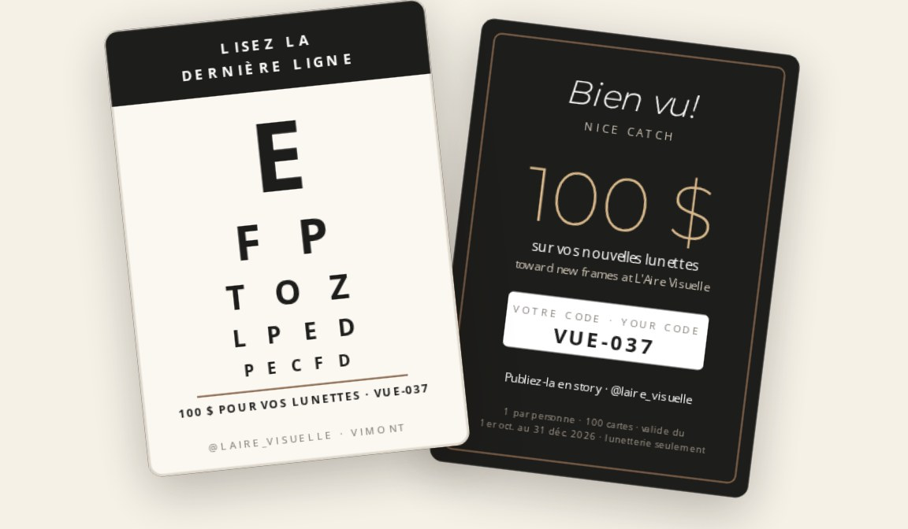
EXCLUSIF À THE GOLDEN STANDARD · 4 000 $ / MOIS
La chasse aux 100 cartes
100 cartes d’examen de la vue format poche valant chacune 100 $ sur de nouvelles montures, cachées dans Vimont. On lit la dernière ligne, on publie une story qui identifie la clinique — et on apporte sa carte à l’essayage. L’une de vos quatre campagnes transforme chaque trouvaille en portée.
100 cartes numérotées, conçues et placées par TGS
Une campagne dédiée : teasers, mises à jour, repartages
Chaque carte suivie, de la trouvaille au mur de montures
Clause de satisfaction · Les deux forfaits
Pas satisfait après le premier mois? Partez.
Si le premier mois ne répond pas à vos besoins, mettez fin à l’un ou l’autre forfait par avis écrit avant le début du deuxième mois — sans pénalité ni frais, et les mois deux et trois ne sont jamais facturés. Vous payez seulement le mois livré et vous gardez chaque vidéo, publication et compte que nous avons configurés. Personne n’est engagé pour trois mois.
Préparé pour L’Aire Visuelle — Stratégie de croissance de la patientèle
11
09 — Prochaines étapes
L’Aire Visuelle × TGS
La suite des choses
Six étapes jusqu’au premier nouveau patient relié à une campagne.
01
Choisir le forfait, partager le point de départ
Standard ou The Golden Standard. Puis, environ combien de nouveaux patients vous voyez par mois, comment ils vous ont trouvés, et combien d’examens se terminent par de nouvelles lunettes.
02
Donner les accès
Meta Business Manager, le compte publicitaire, les pages Instagram et Facebook, et le site Web pour la nouvelle page de rendez-vous et le pixel — votre site utilise déjà Google Tag Manager, donc aucune refonte n’est nécessaire.
03
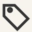
Confirmer les offres
Les services et collections à mettre de l’avant, les promotions de la saison (celle sur votre site porte sur les lunettes de soleil de juin–juillet) et les règles des 100 cartes.
04
Nommer votre personne-ressource
Qui fait le suivi des demandes et approuve le contenu chaque semaine — et quel optométriste est nommé comme responsable dans les publicités. Le budget pub est déjà couvert par votre forfait.
05
Planifier les premiers tournages
Deux demi-journées à la clinique ce mois-ci — la salle de montre, l’équipe, la salle d’examen — et des patients prêts à être filmés, avec un consentement écrit.
06
Approuver le calendrier d’octobre
Validez la répartition pour que la production et les premières campagnes commencent le 1er.
On se déplace. Les tournages se font selon votre horaire — un matin tranquille ou après le dernier rendez-vous du soir — pour qu’aucun examen ne soit interrompu par la caméra. Vimont est à quelques minutes de notre studio sur Chabanel.
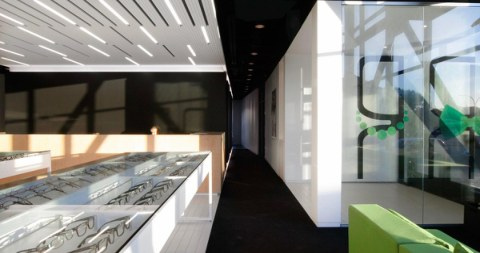
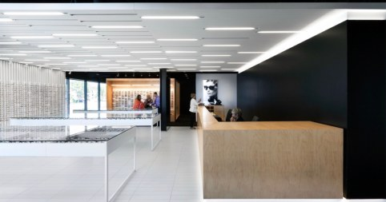
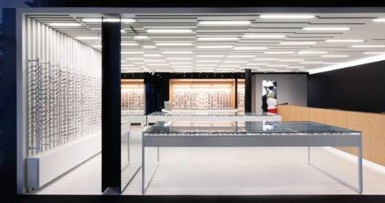
TGS Visuals / Productions
pour L’Aire Visuelle — Vimont, Laval
THEGOLDENSTANDARD.CA
CONTACT@THEGOLDENSTANDARD.CA
(514) 261-8460
Préparé pour L’Aire Visuelle — Stratégie de croissance de la patientèle
12